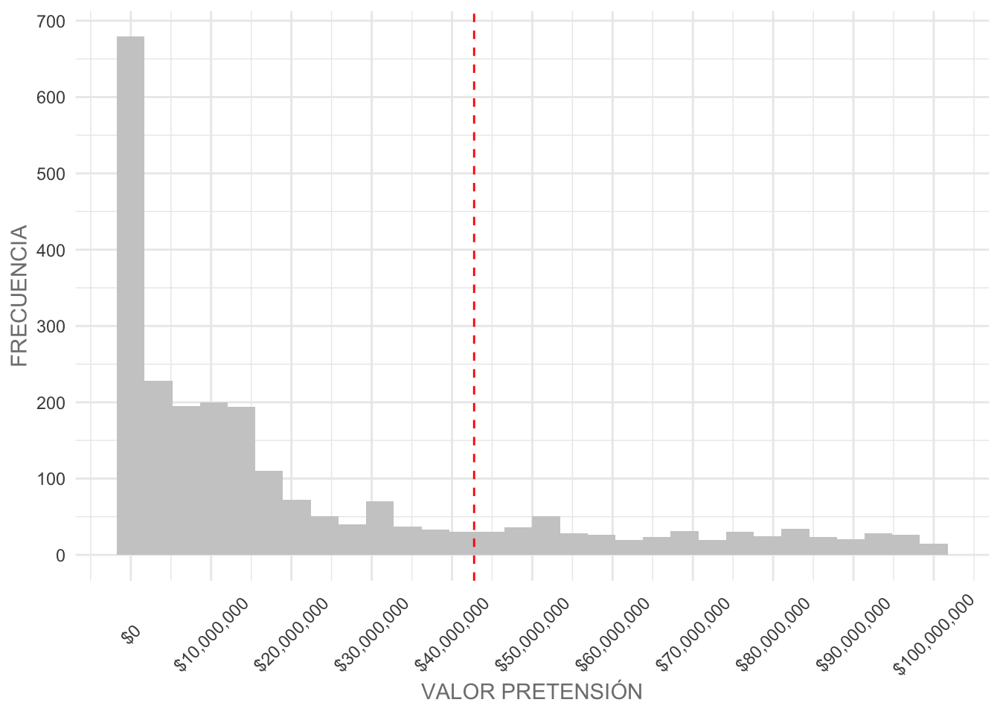
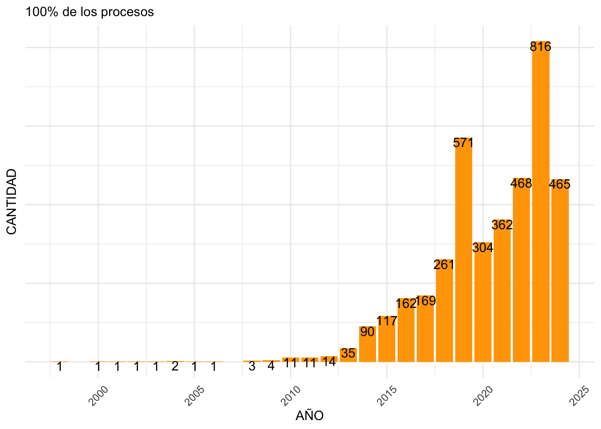
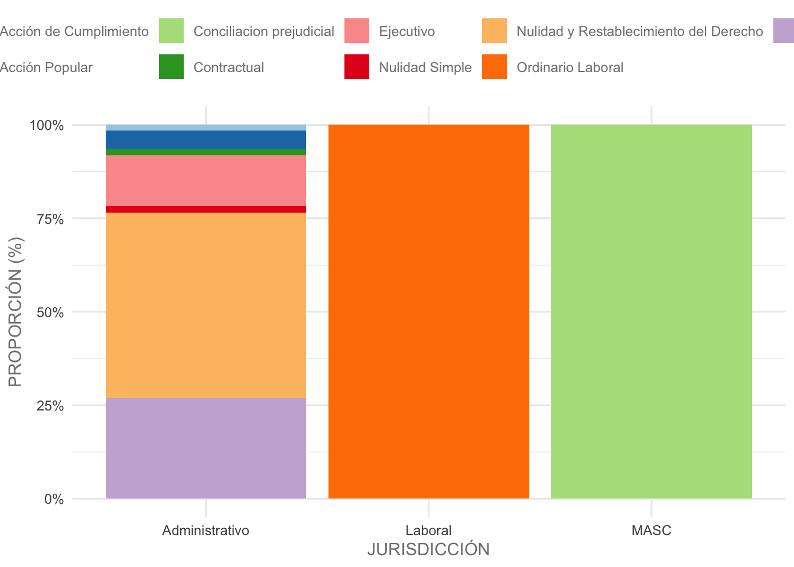

Código
data <- read.csv("./data_procesos_judiciales.csv")March 6, 2025
El Departamento Administrativo de Gestión Jurídica es el organismo encargado de orientar la gerencia jurídica pública, blindar jurídicamente las decisiones del gobierno municipal, asesorar al Alcalde y a los organismos y entidades de la Administración Municipal en el ejercicio de sus competencias, y defender judicial y extrajudicialmente al ente territorial, en el marco de la juridicidad, la prevención del daño antijurídico y la promoción y defensa de los derechos de las personas.
Aquí vamos a revisar los datos abiertos que se encuentran publicados aquí, referentes a Procesos Judiciales en Contra del Distrito de Santiago de Cali.
Ahora estamos listos para ingresar a una parte crucial de la ciencia de datos y machine learning: Análisis Exploratorio de Datos (EDA), el arte de comprender los datos.
En la Figura No.1. tenemos el panorama de un proyecto de ciencia de datos. Aquí, nos saltaremos el primer paso, de Definir el problema, y nos enfocaremos más en conocer la estructura de la información. Mi conocimiento en procesos judiciales no es mucho como para establecer una pregunta a priori, por lo que les pido que asuman que ya tenemos un problema, se hagan los de la vista gorda, y comencemos con el EDA en el marco del problema más amplio.
En cualquier caso de uso de ciencia de datos, comprender los datos consume la mayor parte del tiempo y esfuerzo. La mayoría de los profesionales de la ciencia de datos dedican alrededor del 80% de su tiempo a comprender datos. Dado que esta es la parte más crucial de su viaje, es importante tener un panorama macro del proceso general para cualquier caso de uso de ciencia de datos.
Un caso de uso típico de ciencia de datos toma el camino de un problema central de análisis de negocios o un problema de aprendizaje automático. Cualquiera que sea el camino elegido, la EDA es inevitable. Una vez que se completa el proceso de comprensión de los datos, un proyecto puede tomar un ruta diferente según el alcance del caso de uso.
En la mayoría de los casos todo gira hacia el análisis de negocios. En estos casos, el siguiente paso es asimilar todos los patrones observados en conocimientos significativos. Aunque esto pueda parecer trivial, es una tarea iterativa y ardua. Este paso entonces evoluciona hacia la narración de historias (story telling), donde las ideas se adaptan a un significado para las partes interesadas del negocio. De manera similar, en escenarios donde el objetivo es desarrollar un modelo predictivo, el siguiente paso sería desarrollar una modelo de aprendizaje y luego implementarlo/desplegarlo a producción.
| id | no.proceso | tipo.proceso | despacho.actual | jurisdiccion | valor.pretension |
|---|---|---|---|---|---|
| 1 | 2009-00261 | Nulidad y Restablecimiento del Derecho | JUZGADO 019 ADMINISTRATIVO DE CALI | Administrativo | $ 17.025.184 |
| 2 | 2010-00064 | Nulidad y Restablecimiento del Derecho | JUZGADO 013 ADMINISTRATIVO DE CALI | Administrativo | $ 257.500.000 |
| 3 | 2005-04458 | Acción Popular | JUZGADO 017 ADMINISTRATIVO DE ORALIDAD DE CALI | Administrativo | $ 0 |
| 4 | 2006-01002 | Reparacion Directa | CONSEJO DE ESTADO 003 SALA CONTENCIOSO ADMINISTRATIVA SECCIÓN TERCERA | Administrativo | $ 698.799.698 |
| 5 | 2010-01261 | Nulidad y Restablecimiento del Derecho | TRIBUNAL CONTENCIOSO ADMINISTRATIVO DE CUNDINAMARCA DESCONGESTIÓN SECCIÓN SEGUNDA | Administrativo | $ 160.680.000 |
Vamos a usar este dataset para realiazar nuestro EDA.
En términos sencillos, podemos definir EDA como la ciencia de comprender datos. La definición formal: es el proceso de analizar y explorar conjuntos de datos para resumir su características, propiedades y relaciones latentes utilizando datos estadísticos, visuales, analíticos o una combinación de técnicas.
El conjunto de datos es una combinación de características numéricas y categóricas. Para estudiar los datos, es posible que necesitemos explorar características individualmente, y para estudiar relaciones, es posible que necesitemos explorar características conjuntas. Dependiendo del número de funciones y del tipo de funciones, pueden encontrarse diferentes tipos de EDA.
Para simplificar, podemos clasificar a grandes rasgos el proceso de EDA de la siguiente manera:
Análisis univariante: estudio de una sola característica.
Análisis bivariado: estudio de la relación entre dos características.
Análisis multivariado: estudio de la relación entre más de dos características.
Por ahora, restringiremos el alcance del capítulo al análisis univariado y bivariado. Para realizar cada uno de los análisis mencionados anteriormente, podemos utilizar la visualización. técnicas como diagramas de caja, diagramas de dispersión y gráficos de barras; técnicas estadísticas como prueba de hipótesis; o técnicas analíticas simples como promedios, recuentos de frecuencia, etcétera.
Si analizamos esto más detalladamente, tenemos otra dimensión a la que atender, es decir, los tipos de características: numéricas o categóricas. En cada uno de los tipos de análisis mencionados—univariante y bivariado: según el tipo de característica, es posible que tengamos una técnica visual diferente para realizar el estudio. Entonces, para el análisis univariado de una variable numérica, podríamos usar un histograma o un diagrama de caja, mientras que podríamos usar un gráfico de barras de frecuencia para una variable categórica. Con el contexto básico establecido para el ejercicio, preparémonos para una EDA.
Estamos explorando la longitud y la amplitud de los datos, es decir, el número de filas y columnas, los nombres de cada columna, el tipo de datos de cada columna y un nivel alto vista de lo que se almacena en cada columna
'data.frame': 3872 obs. of 6 variables:
$ id : int 1 2 3 4 5 6 7 8 9 10 ...
$ no.proceso : chr "2009-00261" "2010-00064" "2005-04458" "2006-01002" ...
$ tipo.proceso : chr "Nulidad y Restablecimiento del Derecho" "Nulidad y Restablecimiento del Derecho" "Acción Popular" "Reparacion Directa" ...
$ despacho.actual : chr "JUZGADO 019 ADMINISTRATIVO DE CALI" "JUZGADO 013 ADMINISTRATIVO DE CALI" "JUZGADO 017 ADMINISTRATIVO DE ORALIDAD DE CALI" "CONSEJO DE ESTADO 003 SALA CONTENCIOSO ADMINISTRATIVA SECCIÓN TERCERA" ...
$ jurisdiccion : chr "Administrativo" "Administrativo" "Administrativo" "Administrativo" ...
$ valor.pretension: chr "$ 17.025.184" "$ 257.500.000" "$ 0" "$ 698.799.698" ...Podemos decir que tenemos 6 variables (si contamos con el id) independientes. Parece que en una de ellas (valor.pretension) debemos hacer una transformación de tipo chr a num.
Para los datos numéricos revisamos estadísticas como mínimo, máximo, media, desviación estándar y distribución de percentiles.
Para los datos categóricos revisamos frecuencias en los valores.
data |>
ggplot(aes(y=valor.pretension))+
geom_boxplot(outlier.colour = "orange")+
scale_y_continuous(labels = scales::dollar,
breaks = c(seq(0,1000000000000, by = 50000000000)))+
theme_minimal()+
theme(axis.text.x = element_blank(),
text = element_text(color = "gray50"))+
labs(y = "VALOR PRETENSIÓN")| Dato | Valor |
|---|---|
| Min. | $0 |
| 1st Qu. | $6,482,758 |
| Median | $42,755,100 |
| Mean | $909,806,080 |
| 3rd Qu. | $273,848,322 |
| Max. | $587,049,336,832 |
Vemos que la mitad (nos dice la mediana, o percentil 50) de los procesos judiciales pretenden menos de \(\$50\) millones de pesos.
Si exploras la variable con el resultado del resumen de las estadísticas, podemos ver que la pretensión tiene un valor mínimo de \(\$0\) pesos, un máximo de \(\$587\) millones de pesos y una media de \(\$42\) millones de pesos. Si observas de cerca la brecha entre el percentil \(75\) (tercer cuartil) y el percentil \(100\) (máximo), puedes ver un gran salto. Esto indica que existen valores atípicos presentes en la variable edad. La presencia de valores atípicos afectará tus conclusiones del análisis. En escenarios donde usarías el promedio, o media, como una cifra aproximada para dar una estimación de la variable, la comprensión completa de la variable puede ser engañosa.
Por otro lado, vamos a graficar el histograma, hasta valores de \(\$100\) millones de pesos, que ofrece una vista más detallada de la distribución de los datos para la variable.
data |>
filter(valor.pretension <= 100000000) |>
ggplot(aes(valor.pretension))+
geom_histogram(fill = "gray80")+
scale_x_continuous(labels = scales::dollar,
breaks = c(seq(0,100000000, by = 10000000)))+
scale_y_continuous(breaks = c(seq(0, 1000, by = 100)))+
theme_minimal()+
theme(axis.text.x = element_text(angle = 45, vjust = 0.5),
text = element_text(color = "gray50"))+
labs(x = "VALOR PRETENSIÓN", y = "FRECUENCIA")+
geom_vline(xintercept = 42755100, col = "red", lty = 2)
En situaciones en las que queremos ver una vista mucho más detallada de la distribución, en lugar de aumentar el número de intervalos del histograma, podemos optar por visualizar utilizando un gráfico de densidad que visualiza la gráfica en un intervalo continuo, utilizando kernel smoothing para suavizar el ruido.
data |>
filter(valor.pretension <= 100000000) |>
ggplot(aes(valor.pretension))+
geom_density(fill = "gray80")+
scale_x_continuous(labels = scales::dollar,
breaks = c(seq(0,100000000, by = 10000000)))+
theme_minimal()+
theme(axis.text.x = element_text(angle = 45, vjust = 0.5),
text = element_text(color = "gray50"))+
labs(x = "VALOR PRETENSIÓN", y = "FRECUENCIA")+
geom_vline(xintercept = 42755100, col = "red", lty = 2)Los gráficos de densidad proporcionan detalles más finos que un histograma. Mientras que este nivel de detalle también se puede lograr utilizando un número mayor de intervalos para un histograma, a menudo se requiere un método de prueba y error para obtener el mejor número de intervalos. En tales casos, una opción más sencilla sería optar por los gráficos de densidad.
Generamos un gráfico de barras con las cuentas de frecuencia para cada clase visualizada. Además, podríamos utilizar el gráfico de barras para representar la distribución de frecuencia de cada una de estas categorías individuales mediante una gráfica. Voy a dejar por fuera la columna id, y valor.pretension que vimos antes. Aprovecho para extraer la fecha de la columna no.proceso. Debemos hacer una serie de modificaciones a la tabla porque los nombres del despacho.actual no están normalizados:
# Extraer la fecha del número de proceso
data <- data |>
mutate(fecha = as.numeric(substr(no.proceso, 1, 4)))
# Función para extraer la primera palabra
extraer_primera_palabra <- function(texto) {
# Aplicamos la función a cada elemento del vector 'texto'
sapply(texto, function(x) {
palabras <- strsplit(x, "\\s+")[[1]]
if (length(palabras) > 0) {
palabras[1]
} else {
NA
}
})
}
# Función para extraer el número, que aplica para juzgados en su mayoría
extraer_primera_cadena_numerica <- function(texto) {
# Aplicamos la función a cada elemento del vector 'texto'
sapply(texto, function(x) {
coincidencias <- gregexpr("\\d+", x)
if (coincidencias[[1]] > 0) {
regmatches(x, coincidencias)[[1]][1]
} else {
NA
}
})
}
# Función para extraer la segunda palabra
extraer_segunda_palabra_sin_numeros <- function(texto) {
# Aplicamos la función a cada elemento del vector 'texto'
sapply(texto, function(x) {
# Dividir el texto en palabras
palabras <- strsplit(x, "\\s+")[[1]]
# Verificar si hay al menos dos palabras
if (length(palabras) >= 2) {
segunda_palabra <- palabras[2]
# Verificar si la segunda palabra contiene números
if (!grepl("\\d", segunda_palabra)) {
return(segunda_palabra)
}
}
# Si no hay suficientes palabras o la segunda palabra contiene números, devuelve NA
return(NA)
})
}
# Función para extraer la ultima cadena
extraer_segunda_palabra_sin_numeros_y_no_DE <- function(texto) {
# Aplicamos la función a cada elemento del vector 'texto'
sapply(texto, function(x) {
# Dividir el texto en palabras
palabras <- strsplit(x, "\\s+")[[1]]
# Verificar si hay al menos dos palabras
if (length(palabras) >= 2) {
segunda_palabra <- palabras[2]
# Verificar si la segunda palabra contiene números
if (!grepl("\\d", segunda_palabra)) {
# Verificar si la segunda palabra en mayúsculas no es "DE"
if (toupper(segunda_palabra) != "DE") {
return(segunda_palabra)
} else {
return(palabras[3])
}
}
}
# Si no hay suficientes palabras o no cumple con los criterios, devuelve NA
return(NA)
})
}
extraer_desde_ultima_DE <- function(texto) {
# Aplicamos la función a cada elemento del vector 'texto'
vapply(texto, function(x) {
# Dividir el texto en partes usando " DE " como delimitador
partes <- strsplit(x, " DE ")[[1]]
# Verificar si hay al menos dos partes (algo antes y algo después de " DE ")
if (length(partes) >= 2) {
# Obtener la última parte después del último " DE "
partes[length(partes)]
} else {
# Si no hay suficientes partes, devuelve NA como carácter
NA_character_
}
}, character(1))
}
# Función para juntar los valores extraídos
pegar_valores <- function(col1, col2, col3, col4) {
# Inicializamos un vector para almacenar los resultados
resultado <- character(length(col1))
# Recorremos cada elemento de las columnas
for(i in seq_along(col1)) {
# Creamos un vector temporal con los valores no NA
temp <- c(
if (!is.na(col1[i])) col1[i],
if (!is.na(col2[i])) col2[i],
if (!is.na(col3[i])) col3[i],
if (!is.na(col4[i])) col4[i]
)
# Si el vector temporal no está vacío, pegamos los valores
if (length(temp) > 0) {
# Usamos paste0 para unir los elementos sin espacios adicionales
resultado[i] <- paste0(temp, collapse = " ")
} else {
# Si todas las columnas son NA, asignamos NA
resultado[i] <- NA
}
}
return(resultado)
}
# Reformar data
data <- data |>
mutate(primera_palabra = toupper(extraer_primera_palabra(despacho.actual)),
numero = as.numeric(extraer_primera_cadena_numerica(despacho.actual)),
detalle = toupper(extraer_segunda_palabra_sin_numeros_y_no_DE(despacho.actual)),
region = toupper(extraer_desde_ultima_DE(despacho.actual))) |>
mutate(lugar = pegar_valores(primera_palabra, numero, detalle, region)) |>
dplyr::select(-c(primera_palabra, numero, detalle, region))
# Mostrar tabla
data |>
head() |>
gt() |>
aplicar_theme_table()| id | no.proceso | tipo.proceso | despacho.actual | jurisdiccion | valor.pretension | fecha | lugar |
|---|---|---|---|---|---|---|---|
| 1 | 2009-00261 | Nulidad y Restablecimiento del Derecho | JUZGADO 019 ADMINISTRATIVO DE CALI | Administrativo | 17025184 | 2009 | JUZGADO 19 CALI |
| 2 | 2010-00064 | Nulidad y Restablecimiento del Derecho | JUZGADO 013 ADMINISTRATIVO DE CALI | Administrativo | 257500000 | 2010 | JUZGADO 13 CALI |
| 3 | 2005-04458 | Acción Popular | JUZGADO 017 ADMINISTRATIVO DE ORALIDAD DE CALI | Administrativo | 0 | 2005 | JUZGADO 17 CALI |
| 4 | 2006-01002 | Reparacion Directa | CONSEJO DE ESTADO 003 SALA CONTENCIOSO ADMINISTRATIVA SECCIÓN TERCERA | Administrativo | 698799698 | 2006 | CONSEJO 3 ESTADO ESTADO 003 SALA CONTENCIOSO ADMINISTRATIVA SECCIÓN TERCERA |
| 5 | 2010-01261 | Nulidad y Restablecimiento del Derecho | TRIBUNAL CONTENCIOSO ADMINISTRATIVO DE CUNDINAMARCA DESCONGESTIÓN SECCIÓN SEGUNDA | Administrativo | 160680000 | 2010 | TRIBUNAL CONTENCIOSO CUNDINAMARCA DESCONGESTIÓN SECCIÓN SEGUNDA |
| 6 | 2012-00130 | Nulidad y Restablecimiento del Derecho | TRIBUNAL CONTENCIOSO ADMINISTRATIVO | Administrativo | 55776100 | 2012 | TRIBUNAL CONTENCIOSO |
La primera variable categórica que vamos a revisar es por tipo.proceso, aunque solo el \(80\%\) de ellos:
data |>
group_by(tipo.proceso) |>
summarise(Cantidad = n()) |>
arrange(desc(Cantidad)) |>
mutate(Pareto = cumsum(Cantidad),
Acumulado = round(100 * Pareto / max(Pareto))) |>
filter(Acumulado <= 80) |>
ggplot(aes(tipo.proceso, Cantidad))+
geom_bar(stat = "identity", position = "dodge", fill = "orange")+
theme_minimal()+
theme(axis.text.x = element_text(angle = 45, vjust = 0.5),
axis.text.y = element_blank(),
text = element_text(color = "gray50"))+
labs(x = "TIPO DE PROCESO", y = "CANTIDAD",
subtitle = "80% de los procesos")+
geom_text(aes(label = Cantidad), vjust = 1)La segunda variable será el lugar que creamos un poco más arriba, solo el \(50\%\) mostramos aquí por la cantidad que existe.
data |>
group_by(lugar) |>
summarise(Cantidad = n()) |>
arrange(desc(Cantidad)) |>
mutate(Pareto = cumsum(Cantidad),
Acumulado = round(100 * Pareto / max(Pareto))) |>
filter(Acumulado <= 50) |>
ggplot(aes(lugar, Cantidad))+
geom_bar(stat = "identity", position = "dodge", fill = "orange")+
theme_minimal()+
theme(axis.text.x = element_text(angle = 45, vjust = 0.5),
axis.text.y = element_blank(),
text = element_text(color = "gray50"))+
labs(x = "LUGAR", y = "CANTIDAD",
subtitle = "50% de los procesos")+
geom_text(aes(label = Cantidad), vjust = 1)La tercera variable será la fecha:
data |>
group_by(fecha) |>
summarise(Cantidad = n()) |>
arrange(desc(Cantidad)) |>
mutate(Pareto = cumsum(Cantidad),
Acumulado = round(100 * Pareto / max(Pareto))) |>
#filter(Acumulado <= 50) |>
ggplot(aes(fecha, Cantidad))+
geom_bar(stat = "identity", position = "dodge", fill = "orange")+
theme_minimal()+
theme(axis.text.x = element_text(angle = 45, vjust = 0.5),
axis.text.y = element_blank())+
labs(x = "AÑO", y = "CANTIDAD",
subtitle = "100% de los procesos")+
geom_text(aes(label = Cantidad), vjust = 1)
La última variable que tenemos es jurisdiccion:
data |>
group_by(jurisdiccion) |>
summarise(Cantidad = n()) |>
arrange(desc(Cantidad)) |>
mutate(Pareto = cumsum(Cantidad),
Acumulado = round(100 * Pareto / max(Pareto))) |>
#filter(Acumulado <= 50) |>
ggplot(aes(jurisdiccion, Cantidad))+
geom_bar(stat = "identity", position = "dodge", fill = "orange")+
theme_minimal()+
theme(axis.text.x = element_text(angle = 45, vjust = 0.5),
axis.text.y = element_blank(),
text = element_text(color = "gray50"))+
labs(x = "JURISDICCIÓN", y = "CANTIDAD",
subtitle = "100% procesos")+
geom_text(aes(label = Cantidad))Aquí ampliamos nuestro análisis para estudiar dos variables juntas. En nuestro caso, tenemos unas 6 variables independientes. En efecto, es posible estudiar todas las combinaciones de permutaciones de las 6 variables disponibles, pero no llegaremos a ese extremo en este post.
data |>
group_by(tipo.proceso) |>
summarise(Monto = quantile(valor.pretension, probs = 0.5)) |>
arrange(desc(Monto)) |>
slice_head(n = 5) |>
ggplot(aes(tipo.proceso, Monto))+
geom_bar(stat = "identity", position = "dodge", fill = "orange")+
theme_minimal()+
theme(axis.text.x = element_text(angle = 45, vjust = 0.5),
axis.text.y = element_blank(),
text = element_text(color = "gray50"))+
labs(x = "TIPO DE PROCESO", y = "CANTIDAD",
subtitle = "Percentil 50 de los primeros 5 procesos de mayor pretensión")+
geom_text(aes(label = scales::dollar(Monto)))Aquí estamos calculando el percentil 50 de los valores pretendidos en cada proceso.
Y seguimos con la gráfica de jurisdiccion y tipo.proceso, para ver la proporción en cada una de las variables:
data |>
group_by(jurisdiccion, tipo.proceso) |>
summarise(Cantidad = n()) |>
arrange(desc(Cantidad)) |>
ungroup() |>
mutate(Pareto = cumsum(Cantidad),
Acumulado = round(100 * Pareto / max(Pareto))) |>
filter(Acumulado <= 95) |>
ggplot(aes(jurisdiccion, Cantidad, fill = tipo.proceso))+
geom_bar(stat = "identity", position = "fill")+
theme_minimal()+
theme(legend.position = "top",
text = element_text(color = "gray50"))+
labs(x = "JURISDICCIÓN", y = "PROPORCIÓN (%)", fill = NA)+
scale_y_continuous(labels = scales::percent)+
scale_fill_brewer(palette = "Paired")
Con esto, terminamos los primeros pasos, muy sencillos y superficiales, de un EDA para un proyecto de ciencia de datos.
Aquí el objetivo es conocer qué tipo de herramientas se pueden usar para encontrar relaciones entre los datos.
Es el proceso de estudiar las relaciones entre más de dos variables; esencialmente, una variable dependiente y más de una variable independiente. El análisis bivariante es una forma de análisis multivariante. Hay varias formas de análisis multivariante que son importantes, pero omitiremos los detalles por ahora para restringir el alcance del post. En los próximos posts, examinaremos más detenidamente la regresión lineal y logística, que son dos técnicas populares de análisis multivariante. Algunas de las técnicas más utilizadas en el análisis multivariante son las siguientes:
Regresión lineal múltiple (estudio del impacto de más de una variable independiente en una variable objetivo numérica/continua).
Regresión logística (estudio del impacto de más de una variable independiente en una variable objetivo categórica).
Análisis factorial.
MANOVA.
En cualquier EDA, nuestra labor es haber recopilado y anotado algunos patrones interesantes para su posterior validación. Ha llegado el momento de comprobar si lo que hemos observado anteriormente son realmente patrones válidos o sólo parecen interesantes debido al azar. La forma más eficaz y directa de abordar esta validación es realizar una serie de pruebas estadísticas y medir la importancia estadística del patrón. Tenemos un montón de opciones en el conjunto de pruebas disponibles para elegir. Las opciones varían en función del tipo de variable independiente y dependiente:
Variables dependientes categóricas y variables independientes numéricas/continuas.
Variables categóricas dependientes y variables categóricas independientes.
Con este dataset, qué preguntas se te ocurren para realizar un análisis multivarible?
Ya hemos recorrido todo el espectro de un EDA. En las distintas secciones hemos estudiado los datos con mayor o menor profundidad. Ahora que tenemos respuestas válidas para el problema de exploración de datos, podemos volver a tocar el problema inicial definido.
De lo que hemos visto podemos afirmar:
Hay \(3872\) procesos judiciales en el dataset dispuesto por el Departamento Administrativo de Gestión Jurídica de la ciudad.
La mitad de los procesos contienen valores de pretensión menores a \(\$43\) millones de pesos.
Existen realmente pocos, solo \(3\), que tienen valores por encima del \(\$100\) millones de pesos. Son procesos atípicos.
Menos del \(18\%\) de los procesos no tienen valores de pretensión. Son iguales a cero.
La mayoría de procesos son de tipo: Nulidad y Restablecimiento del Derecho, Ejecutivo, Reparación Directa.
El Tribunal Contencioso del Valle del Cauca encabeza el listado de los lugares con mayor cantidad de procesos asignados.
Existen procesos desde el año \(2000\), pero en el año \(2019\) y \(2023\) se incrementaron de forma inusual los procesos judiciales.
La jurisdicción administrativo representa casi el \(90\%\) de los procesos.
@online{chiquito_valencia2025,
author = {Chiquito Valencia, Cristian},
title = {Análisis Exploratorio Datos {Procesos} {Judiciales}},
date = {2025-03-06},
url = {https://cchiquitovalencia.github.io/posts/2025-03-06-procesos_judiciales_cali/},
langid = {en}
}